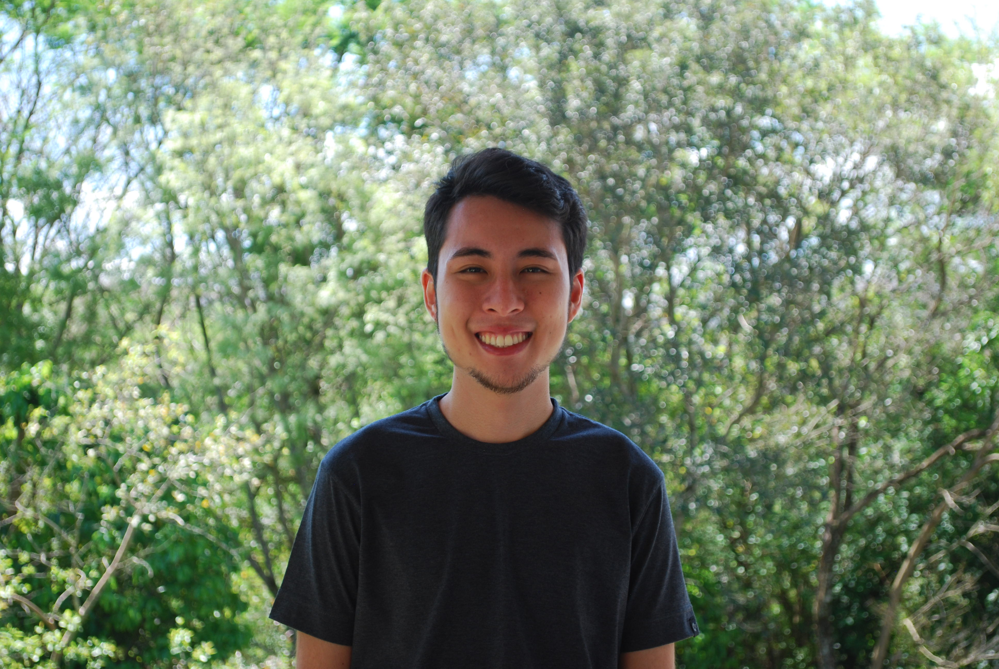

A Trybe como sendo uma escola completa nos ensina desde coisas mais pessoais, como diversas técnicas de como, podemos aprender melhor e gerir nosso, tempo, emocional e estudos. E até claro o conhecimento técnico como SEO, front-end, back-end e ciência da computação de forma completa e integrada!
Veja meus projetos no repositório Github e meus aprendizados na trybe e me acompanhe de perto veja o que estou aprendendo no dia a dia, assim como os exercícios que fiz!
- Search Engine Optimization (SEO)
- Mentalidade & rotina ágil
- JavaScript ES6 avançado
- Responsividade
- Soft skills
- Full-stack
- Front-end
- Back-end
- MySQL
- React
Lições para dar input:
- Autoliderança / Autoresponsabilidade
- Comunicação assertiva
- Aprender a aprender
- Linux, Bash & Shell
- Git & Github
- HTML Semântico
- CSS
- Diversidade
- Slack
- Zoom
Lições com input dado:

| Fundamentos | Front-end | Back-end | Ciência da Computação | Soft Skills | Carreira | Desenvolvimento Web: Vida Real |
|---|---|---|---|---|---|---|
| In Progress | To-Do | To-Do | To-Do | In Progress | In Progress | In Progress |